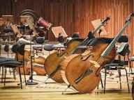

A cultura erudita refere-se às expressões culturais que são consideradas refinadas, sofisticadas e associadas à alta cultura. Ela se baseia em tradições artísticas, intelectuais e acadêmicas, sendo frequentemente associada às produções de artistas, escritores, compositores e pensadores renomados. A cultura erudita é caracterizada por uma apreciação e valorização de formas de expressão artística que requerem um alto grau de habilidade e conhecimento para serem compreendidas e apreciadas plenamente.
A presença da cultura erudita é observada em todo o mundo, através de diversas manifestações artísticas e intelectuais.Ela engloba áreas como a música clássica, a ópera, a literatura clássica, o teatro de vanguarda, a pintura acadêmica, a dança contemporânea, entre outras formas de expressão. Geralmente, a cultura erudita é mais valorizada nas esferas acadêmicas, nos centros culturais e nas elites intelectuais.
No Brasil, a cultura erudita também possui sua relevância e influência. Aqui estão alguns exemplos da cultura erudita no país:
A música erudita tem sua presença no Brasil através de orquestras, coros, grupos de câmara e festivais dedicados a esse gênero. Além disso, há conservatórios e escolas de música que ensinam teoria musical, instrumentos clássicos e repertórios eruditos.
O teatro de caráter mais experimental e vanguardista, inspirado em movimentos europeus como o teatro do absurdo e o expressionismo, também faz parte da cultura erudita no Brasil. Grupos teatrais e encenadores buscam explorar novas formas de narrativa e linguagem cênica.
A literatura clássica, tanto nacional quanto estrangeira, ocupa um lugar de destaque na cultura erudita brasileira. Autores como Machado de Assis, Guimarães Rosa e Clarice Lispector são reconhecidos como pilares da literatura erudita no país.
A pintura acadêmica e as exposições de arte contemporânea são exemplos da presença da cultura erudita nas artes plásticas do Brasil. Museus e galerias de arte exibem obras de artistas renomados e estimulam o diálogo entre diferentes formas de expressão.
O Brasil possui instituições como museus, teatros, orquestras e centros culturais que promovem e preservam a cultura erudita. Esses espaços são fundamentais para a disseminação e apreciação das diferentes formas de arte erudita no país.
Embora a cultura erudita tenha um lugar importante na sociedade brasileira, é importante destacar que ela coexiste com outras formas de expressão cultural. O Brasil é um país rico em diversidade cultural, onde manifestações populares, folclóricas e contemporâneas também desempenham um papel significativo na identidade cultural do país.
